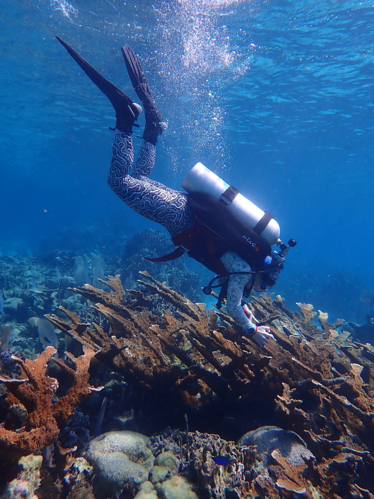

Research Interests and Publications

Research Interests
Structural Complexity
I'm interested in structural complexity and phenotypic plasticity of corals. In my Ph.D. I'm working to understand how corals create structure and form and how they result in the beautiful geometries that make up the reef.
Hybrid Reefs
I'm curious about how hybrid reef structures can change the way we look at and work with coral restoration
Publications
Rahman, S.M., Hauser, C., Faucher, S., Fine, E., Luebke, A.E. 2024. A Vestibular Challenge Combined with Calcitonin Gene-Related Peptide (CGRP) Promotes Anxiety-Like Behaviors. eNeuro 11(7): ENEURO.0270-23.2024. doi: 10.1523/ENEURO.0270-23.2024.
Rahman, S.M., Hauser, C., Luebke A.E. 2024. Loss of calcitonin gene-related peptide (αCGRP) and use of a vestibular challenge highlight balance deficiencies in aging mice. PLoS One 19(6): e0303801. doi: 10.1371/journal.pone.0303801.
Presentations
Posters
ICRS 2026
Presented at the International Coral Reef Symposium (ICRS) - July 2026
Cat Hauser, Lisa Carne, Art Gleason, Les Kaufman, Eva Romero, Ethan Deyle. The Pixels of Protection: Revealing Hidden Geometry of Corals Using Deep Learning and Photogrammetry to Support Reef Restoration. [Poster Presentation]. 16th International Coral Reef Symposium (ICRS 2026), Auckland, New Zealand.
AGU 2025
Magaly Koch, Luke Joseph Gezovich, Matthew Weathers, Hannah Henry, Julia Grossman, Thomas Thelen, Tyler Lynn, Stephanie McNamara, Shalom Entner, Catherine Hauser, Eduardo Gonzalez-Lugo, Sucharita Gopal, Christine Regalla, Anindya Wirasatriya, Muhammad Helmi, Aris Ismanto, Muhammad Fakhri Khairillah Almunawir, Muhammad Shulhan, Muhamad Nur Al Fajrin, Sunelsya Surya, Hermin Indah Wahyuni, Agung Harijoko and Gayatri Marliyani; OS51E-0456 Global Coastal Hazard Perspectives: Insights from the 2025 Advanced Studies Institute Graduate Training Program on Multidisciplinary Coastal Zone Hazards in Java, Indonesia link to AGU portal